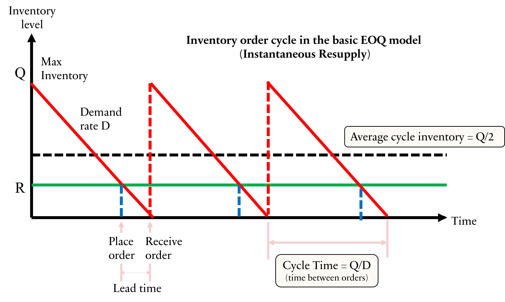
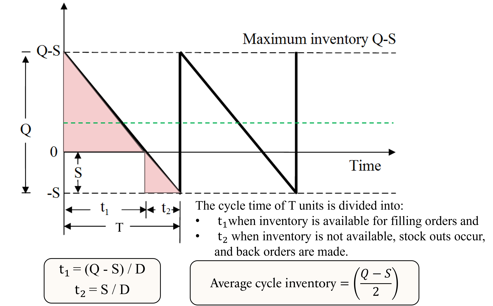
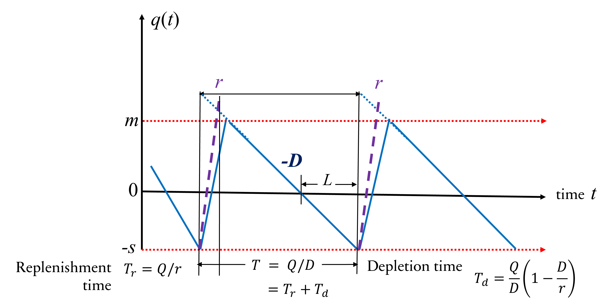

%%{init: {
"flowchart": {
"padding": 40,
"nodeSpacing": 30,
"rankSpacing": 100
}
}}%%
flowchart LR
DC1((" DC1 "))
DC2((" DC2 "))
C1((" C1 "))
C2((" C2 "))
C3((" C3 "))
DC1 --> C1
DC1 --> C2
DC1 --> C3
DC2 --> C1
DC2 --> C2
DC2 --> C3
Revision: Summary of Topics 1-8
05115130 Supply Chain Modelling and Optimisation
14 Jun 2026
Overview
Comprehensive revision summary for Topics 1-8.
- Focus: key ideas, model choices, and formula references.
- Formula style: concise reference form (no long derivations).
- Goal: fast exam revision and model selection confidence.
PART I: SUPPLY CHAIN FOUNDATIONS
- Topic 1: Intro to Supply Chain & Optimisation
PART II: NETWORK DESIGN
- Topic 2: Single-Echelon Single-Commodity (SESC)
- Topic 3: Two-Echelon Multi-Commodity (TEMC)
- Topic 4: Network Design Under Uncertainty (DCF and NPV)
PART III: FORECASTING TECHNIQUES
- Topic 5: Demand Forecasting
PART IV: INVENTORY MODELS AND CONTROL STRATEGIES
- Topic 6: Deterministic Inventory Models
- Topic 7: Inventory with Quantity Discounts and Multi-Commodity
- Topic 8: Stochastic Inventory Control Policies
PART I. SUPPLY CHAIN FOUNDATIONS
- Supply chain = network from suppliers to final customers.
- Core aim: improve service while controlling total cost.
- SCM links strategy, planning, and operations.
SCM Pyramid and Decision Levels

Push-Pull Strategy
The choice between push and pull strategies is fundamental to supply chain design.
| Characteristic | Push | Pull | Hybrid |
|---|---|---|---|
| Demand Signal | Forecast | Actual | Mix |
| Inventory Location | Upstream | Downstream | Both |
| Lead Time | Longer | Shorter | Balanced |
| Flexibility | Lower | Higher | Moderate |
| Cost | Lower | Higher | Moderate |
| Pros | Economies of scale | Responsiveness | Balanced performance |
| Cons | Risk of overstock | Risk of stockouts | Complexity in management |
PART II. NETWORK DESIGN
- Deterministic Network Design
- Topic 2: single-echelon single-commodity (SESC).
- Topic 3: two-echelon multi-commodity (TEMC).
%%{init: {
"flowchart": {
"htmlLabels": true,
"padding": 40,
"nodeSpacing": 25,
"rankSpacing": 100
}
}}%%
flowchart LR
S1((" S1 "))
S2((" S2 "))
DC1((" DC1 "))
DC2((" DC2 "))
C1((" C1 "))
C2((" C2 "))
C3((" C3 "))
S1 --> DC1
S1 --> DC2
S2 --> DC1
S2 --> DC2
DC1 --> C1
DC1 --> C2
DC1 --> C3
DC2 --> C1
DC2 --> C2
DC2 --> C3
- Stochastic Network Design
- Topic 4: network design under uncertainty (DCF and NPV).
Topic 2: SESC Model
- Set and Indices
- \(V_1\): potential facility locations
- \(V_2\): customer locations
- \(j \in V_1\): index for facilities
- \(k \in V_2\): index for customers
- Parameters
- \(c_{jk}:\) transportation cost/unit
- \(f_j:\) fixed cost opening facility \(j\)
- \(d_k:\) customer \(k\) demand
- \(K_j:\) facility \(j\) capacity
- Decision Variables
- \(y_{jk}:\) flow from facility \(j\) to customer \(k\)
- \(z_j:\) binary variable indicating if facility \(j\) is open
- Objective
\[ \text{Minimise} \quad Z = \sum_{j \in V_1} \sum_{k \in V_2} c_{jk} y_{jk} + \sum_{j \in V_1} f_j z_j \]
- Constraints
- Demand satisfaction: \(\sum_{j \in V_1} y_{jk} = d_k\) for all \(k \in V_2\)
- Facility opening: \(\qquad y_{jk} \leq K_j z_j\) for all \(j \in V_1, k \in V_2\)
- Binary variables: \(\quad\;\;\, z_j \in \{0,1\}\) for all \(j \in V_1\)
- Non-negativity: \(\qquad\; y_{jk} \geq 0\) for all \(j \in V_1, k \in V_2\)
Topic 3: TEMC Model
- Sets and Indices
- \(V_0\): suppliers, \(i \in V_0\)
- \(V_1\): DCs, \(j \in V_1\)
- \(V_2\): customers, \(k \in V_2\)
- \(H\): commodities, \(h \in H\)
- Parameters
- \(c_{ijk}^h\): cost/unit from supplier \(i\) to DC \(j\) to customer \(k\) for commodity \(h\).
- \(f_j\): fixed cost to open DC \(j\).
- \(g_j\): handling cost/unit at DC \(j\).
- \(D_k^h\): demand for commodity \(h\) at customer \(k\).
- Decision Variables
- \(x_{ijk}^h\): flow of commodity \(h\) from supplier \(i\) to DC \(j\) to customer \(k\).
- \(y_{jk}\): total flow through DC \(j\).
- \(z_j\): binary variable indicating if DC \(j\) is open.
Objective Function \[ \min Z = \sum_{i,j,k,h} c_{ijk}^h x_{ijk}^h + \sum_j\left(f_j z_j + g_j\sum_{k,h} D_k^h y_{jk}\right) \]
Constraints
- Demand satisfaction: \(\sum_{i,j} x_{ijk}^h = D_k^h\) for all \(k \in V_2, h \in H\).
- Flow conservation: \(\quad y_{jk} = \sum_{i,h} x_{ijk}^h\) for all \(j \in V_1, k \in V_2\).
- Facility opening: \(\qquad y_{jk} \leq K_j z_j\) for all \(j \in V_1, k \in V_2\).
- Binary variables: \(\quad\;\;\, z_j \in \{0,1\}\) for all \(j \in V_1\).
- Non-negativity: \(\qquad\; x_{ijk}^h, y_{jk} \geq 0\) for all \(i,j,k,h\).
SESC vs TEMC: Model Selection
- Use SESC when:
- one commodity,
- single distribution echelon,
- faster MILP solve desired.
- Use TEMC when:
- multi-product interactions matter,
- two-echelon structure is essential,
- handling capacities and product mix are important.
Deterministic Network Design Recap
- Both models use binary location and continuous flow decisions.
- Objective is still total cost minimisation.
- Complexity increases with echelons and commodity count.
Topic 4: Network Design Under Uncertainty
- Real systems include demand, supply, lead-time, and cost uncertainty.
- Financial viability must be tested with discounted cash flows.
- Decision trees and scenarios complement deterministic optimisation.
Present Value and NPV Formulas
\[ \boxed{PV_t = \frac{C_t}{(1+r)^t}} \qquad \boxed{NPV = C_0 + \sum_{t=1}^{T} \frac{C_t}{(1+r)^t}} \]
Cash flow in period \(t, C_t\), discount rate \(r\), \(C_0\) is usually negative.
\(NPV > 0\): value created, acceptable project.
\(NPV = 0\): financial break-even.
\(NPV < 0\): value destroyed, reject or redesign.
For alternatives, choose highest positive NPV under valid assumptions.
Decision Tree
- Uncertainty in demand and/or price can be shown as branches with probabilities.
- Depth of tree: number of sequential decisions or time periods. The following decision tree has a depth of 4 (4 sequential decisions or time periods).
%%{init: {
"flowchart": {
"padding": 40,
"nodeSpacing": 25,
"rankSpacing": 175
},
"themeVariables": {
"fontSize": "22px"
}
}}%%
flowchart LR
P0(( )) --> |P1|P11(( ))
P0 --> |P2|P12(( ))
P0 --> |P3|P13(( ))
P11 --> P21(( ))
P11 --> P22(( ))
P12 --> P22
P12 --> P23(( ))
P12 --> P24(( ))
P12 --> P25(( ))
P21 --> P31(( ))
P22 --> P31
P22 --> P32(( ))
P23 --> P32
P23 --> P33(( ))
P23 --> P34(( ))
P31 --> P41(( ))
P31 --> P42(( ))
P33 --> P43(( ))
P34 --> P43(( ))
P34 --> P44(( ))
classDef default fill:#d1e7dd,stroke:#000000,color:#ffffff;
- Calculate expected NPV at each node by rolling back from the leaves to the root, using probabilities and discounted cash flows.
Evaluating NPV: Bellman’s Principle
Solve the problem from the end (future outcomes) back to the beginning.
- Structure the decision tree
- Draw nodes and terminal nodes (outcomes) connected with arrows
- Label branches with probabilities of occurrence.
- Assign payoffs for each node
- For each node, calculate payoffs (profit) and state the probability.
- Work backwards (Bellman’s principle)
From the terminal node, calculate
\(\text{Expected Monetary Value (EMV)} = \sum (\text{Probability} \times \text{Payoff})\)
Discount EMV to Present Value (PV)
- Continue working backward until you reach the initial decision.
PART III. FORECASTING TECHNIQUES
- Forecasts align supply decisions with expected demand.
- Better forecasts reduce stockouts and overstock.
- Forecast horizon determines method and usable detail.
Forecast Horizons and Use Cases
- Short-term: scheduling, replenishment, dispatching.
- Medium-term: capacity planning, purchasing plans.
- Long-term: strategic expansion and network redesign.
Demand Pattern Decomposition
\[ \text{Demand} = \text{Trend} + \text{Seasonality} + \text{Random Variation} \]
- Level: stable base demand.
- Trend: long-term in/decrease.
- Seasonality: repeated periodic pattern.
- Random: noise not captured by structure.
Topic 5. Demand Forecasting
Naive Forecast Baseline
\[ \boxed{F_{t+1} = F_t} \]
- Useful as a benchmark.
- Often weak when trend or seasonality is strong.
Moving Average (\(n-\)MA)
\[ \boxed{\hat{Y}_{t+1} = \frac{Y_t + \cdots + Y_{t-n+1}}{n}} \]
- \(n\) = number of periods
- \(\hat{Y}_{t+1}\) = forecast for the next period
Weighted Moving Average (\(n-\)WMA)
\[\boxed{\hat{Y}_{t+1} = w_1Y_t + \cdots + w_nY_{t-n+1}}\]
- \(\sum w_i = 1\)
- Assign more weight to recent data for responsiveness.
Simple Exponential Smoothing (\(\alpha\)-SES)
\[\boxed{\hat{Y}_{t+1} = \alpha Y_t + (1 - \alpha)\hat{Y}_t}\]
- \(\alpha\) smoothing constant (\(0 < \alpha \leq 1\))
- \(Y_t\) actual value at time \(t\)
- \(\hat{Y}_t\) forecast for time \(t\)
Linear Regression Forecasting
\[ \boxed{\hat{y} = a + bx}\;\;\boxed{b = \frac{\Delta y}{\Delta x}} \] \[ SSE = \sum (y_i - \hat{y}_i)^2 \]
- Choose coefficients to minimise SSE.
- Interpret residuals for model adequacy.
\[\boxed{b = \frac{\sum XY - n\bar{x}\bar{y}}{\sum X^2 - n\bar{x}^2} = \frac{\sum (X_i - \bar{x})(Y_i - \bar{y})}{\sum (X_i - \bar{x})^2}}\]
\[\boxed{a = \bar{y} - b\bar{x}, \quad \bar{x} = \frac{\sum X}{n}, \quad \bar{y} = \frac{\sum Y}{n}}\]
Multiple Regression Forecasting
\[ \boxed{\hat{y} = a + b_1x_1 + b_2x_2 + \cdots + b_kx_k} \]
- Forecast depends on multiple independent variables \(x_1, x_2, \ldots, x_k\).
- Usually solved with matrix algebra or software for coefficient estimation.
- In the case of two independent variables, \(\hat y = a + b_1x_1 + b_2x_2\), the coefficients can be estimated using the following system of equations derived from the least squares method:
\[ \boxed{ \begin{align} \sum Y =&\;\; na + b_1 \sum X_1 + b_2 \sum X_2 \\ \\ \sum X_1Y =&\;\; a \sum X_1 + b_1 \sum X_1^2 + b_2 \sum X_1X_2\\ \\ \sum X_2Y =&\;\; a \sum X_2 + b_1 \sum X_1X_2 + b_2 \sum X_2^2 \end{align} } \]
Evaluation Metrics
Other than the sum of squared errors (SSEs), there are several metrics to evaluate the accuracy of forecasting models. Common ones include:
| Metric | Formula | Interpretation |
|---|---|---|
| Sum of Absolute Errors (SAE) | \(\sum |y_i - \hat{y}_i|\) | Total absolute error between actual and forecasted values. Lower is better. |
| Mean Absolute Error (MAE) | \(\dfrac{1}{n} \sum |y_i - \hat{y}_i|\) | Average absolute error between actual and forecasted values. Lower is better. |
| Root Mean Squared Error (RMSE) | \(\sqrt{\dfrac{1}{n} \sum (y_i - \hat{y}_i)^2}\) | Square root of average squared error. More sensitive to large errors. Lower is better. |
| Mean Absolute Percentage Error (MAPE) | \(\dfrac{100\%}{n} \sum \left| \dfrac{y_i - \hat{y}_i}{y_i} \right|\) | Average absolute percentage error. Useful for comparing across different scales. Lower is better. |
| R-squared (\(R^2\)) | \(1 - \dfrac{\sum (y_i - \hat{y}_i)^2}{\sum (y_i - \bar{y})^2}\) | Proportion of variance in the dependent variable explained by the model. Higher is better (max 1). |
PART IV. INVENTORY MODELS & CONTROL STRATEGIES
Core decision pair: how much to order and when to reorder.
- Deterministic models assume known demand and lead time, leading to closed-form solutions like EOQ or EPQ.
- EOQ: Economic Order Quantity for discrete orders.
- Determines optimal order size to minimise total cost.
- EPQ: Economic Production Quantity for continuous production.
- Determines optimal production batch size when items are produced and consumed simultaneously.
- EOQ: Economic Order Quantity for discrete orders.
- Stochastic models account for demand and/or lead time variability, requiring safety stock and service level considerations.
- Continuous review (Q,R): order \(Q\) when inventory position hits \(R\).
- Periodic review (P): review every \(P\) and order up to a target level.
- Newsvendor model: single-period inventory decision.
Common Notations
| Notation | Unit | Description |
|---|---|---|
| \(C\) | $/unit | Purchase or manufacturing cost of an item |
| \(A\) or \(K\) | $/order | The ordering cost per order |
| \(I\) | % | Inventory carrying cost rate or interest rate |
| \(h\) | $/unit/time | Inventory holding cost of an item per unit per time unit |
| \(k\) | $/unit/time | Shortage cost per unit short per time |
| \(D\) | units/year | Demand rate per planning horizon per year |
| \(d\) | units/time | Demand rate per time unit (e.g., per day) |
| \(r\) | units/time | Production rate (for EPQ) |
| \(S\) | units | Shortage quantity, a decision variable |
| \(Q\) | units | Order quantity, a decision variable |
| \(T\) | Time | Cycle time (time between orders), a decision variable |
| \(R\) | units | Reorder level (inventory level at which an order is placed) |
| \(L\) | Time | Lead time |
Topic 6. Deterministic Inventory Models (EOQ & EPQ)
Economic Order Quantity (EOQ)

Basic EOQ Core Formula
\[ \boxed{Q^* = \sqrt{\frac{2DA}{h}}} \quad \boxed{OC = \frac{DA}{Q^*}} \quad \boxed{IHC = \frac{Q^*h}{2}} \]
\[ \boxed{TC = \frac{DA}{Q^*} + \frac{Q^*h}{2} = \sqrt{2DAh}} \]
\[ \boxed{T = \frac{Q^*}{D}} \quad \boxed{\text{Order Frequency} = \frac{D}{Q^*}} \]
\[ \boxed{\frac{TC(Q_1)}{TC(Q^*)} = \frac{1 + b^2}{2b}} \quad \text{where } Q_1 = bQ^* \]
EOQ with Shortage

EOQ with Shortage Formula
\[ \boxed{Q^* = \sqrt{\frac{2DA}{h}\frac{k+h}{k}}} \quad \boxed{S^* = Q^*\frac{h}{k+h}} \quad \boxed{Q^* - S^* =Q^*\frac{k}{k+h}} \]
\[ \boxed{IHC = \frac{(Q^* - S^*)^2}{2Q^*} \cdot h} \quad \boxed{SC = \frac{(S^*)^2}{2Q^*} \cdot k} \]
\[ \boxed{TC^* = \frac{DA}{Q^*} + \frac{(Q^* - S^*)^2}{2Q^*} \cdot h + \frac{(S^*)^2}{2Q^*} \cdot k = \sqrt{2DSAh\frac{k}{k+h}}} \]
Economic Production Quantity (EPQ)

EPQ Core Formula
\[ \boxed{Q^* = \sqrt{\frac{2DA}{h}\frac{r}{r-D}} = \sqrt{\frac{2DA}{h(1-D/r)}}} \]
\[ \boxed{T = \frac{Q^*}{D} = T_r + T_d} \quad \boxed{T_r = \frac{Q^*}{r}} \quad \boxed{T_d = \frac{Q^*}{D}\left(1 - \frac{D}{r}\right)} \]
\[ \boxed{I_{max} = Q^*\left(1 - \frac{D}{r}\right)} \quad \boxed{IHC = \left(1 - \frac{D}{r}\right)\frac{Q^*}{2}h} \]
\[ \boxed{TC^* = \frac{DA}{Q^*} + \left(1 - \frac{D}{r}\right)\frac{Q^*}{2}h = \sqrt{2DAh\left(1 - \frac{D}{r}\right)}} \]
Topic 7. Inventory with Quantity Discounts and Multi-Commodity
- Supplier lowers unit price for larger purchases.
- Benefit: lower purchase cost.
- Risk: higher average inventory and carrying cost.
Discount Types
- All-units discount: one price tier applies to all units in the order.
- Incremental discount: lower tier price applies only to units above breakpoint.
Multi-commodity Inventory Models
- Aggregating multiple products in a single order
- Lot sizing with multiple products or customers
- Delivered independently for each product
- Delivered jointly for all products
- Delivered jointly for a selected subset of the products
EOQ with All-Units Discount
For each discount breaks \(q_i\), compute the EOQ as if that price applied to all units, then evaluate total cost at that EOQ.
\[ \boxed{Q_i^* = \sqrt{\frac{2DA}{IC_i}}} \quad \boxed{\hat{Q}_i = \begin{cases} q_i, & Q_i^* < q_i \\ Q_i^*, & q_i \le Q_i^* \le q_{i+1} \\ q_{i+1}-1, & Q_i^* > q_{i+1} \end{cases}} \]
\[ \boxed{TC_i(Q) = C_iD + \frac{D}{Q}A + \frac{Q}{2}h_i} \quad \boxed{h_i = IC_i} \]
\[ \boxed{Q^* = \arg\min_i TC_i(\hat{Q}_i)} \]
Tips: Starting from the cheapest unit price tier, check if the EOQ falls within that tier. If not, move to the next tier until you find a feasible EOQ or reach the last tier.
EOQ with Incremental Discount
For a discount break \(q_j\), the optimal order quantity \(Q_j^*\):
\[ \boxed{Q_j^* = \sqrt{\frac{2(R_j-C_jq_j+A)d}{IC_j}}} \\ \boxed{R_j= C_1(q_2-q_1)+C_2(q_3-q_2)+\ldots+C_{j-1}(q_j-q_{j-1})} \\ \boxed{C(Q)=R_j +C_j(Q-q_j)} \\ \boxed{ TC(Q_j) = \frac{C(Q_j)}{Q_j}d+\frac{D}{Q_j}A+\frac{Q_j}{2}(I\times \frac{C(Q_j)}{Q_j}) } \]
Tips: Compute \(Q_j^*\) for each discount break \(q_j\). Disregard any \(Q_j^*\) that is not feasible (i.e., does not satisfy the discount break condition). For each feasible \(Q_j^*\), compute the total cost. Choose the \(Q_j^*\) that yields the lowest total cost.
Multi-Commodity Inventory Models
Aggregating \(n\) products in a single order
Independent demand, fixed ordering cost, and the same holding cost.
\[ \boxed{T^*=\sqrt{\frac{2A}{h\sum_{i=1}^n D_i}}} \]
Independent demand, fixedordering cost, and different holding cost rates.
\[ \boxed{T^*=\sqrt{\frac{2A}{\sum_{i=1}^n D_i h_i}}} \]
Independent demand, fixed ordering cost plus product-specific fixed costs \(A_i\), and different holding cost rates.
\[ \boxed{T^*=\sqrt{\frac{2(A+\sum_{i=1}^n A_i)}{\sum_{i=1}^n D_i h_i}}} \]
Use the optimal cycle time \(T^*\),
\[ \boxed{Q_i^* = D_i T^*} \]
\(\boxed{TC^* = \sqrt{2\left(A+\sum_{i=1}^n A_i\right)\sum_{i=1}^n D_i h_i}}\)
Lot sizing with multiple products or customers
Delivered independently for each product
\[ \boxed{Q_i^* = \sqrt{\frac{2DA}{h_i}}} \quad \boxed{TC^* = \sum_{i=1}^n \left(\frac{D}{Q_i^*}A + \frac{Q_i^*}{2}h_i\right) = \sum_{i=1}^n \sqrt{2DAh_i}} \]
Delivered jointly for all products
\[ \boxed{n^* = \sqrt{\frac{\sum_{i=1}^k D_i I C_i}{2A^*}}} \quad \boxed{A^* = A + \sum_{i=1}^n A_i} \quad \boxed{Q_i^* =\frac{D_i}{n^*}} \]
\[ \boxed{\text{OC}= n^*A^*} \quad \boxed{\text{IHC}= \frac{1}{2n^*}\sum_{i=1}^n D_i I C_i} \quad \boxed{TC(n^*)=OC +IHC} \]
Delivered jointly for a selected subset of the products
\[ \boxed{\overline{n}_i = \sqrt{\frac{IC_iD_i}{2(A+A_i)}}} \quad \boxed{\overline{n}=\max \{\overline{n}_i\}} \quad \boxed{\overline{\overline{n}}_i = \sqrt{\frac{IC_iD_i}{2 A_i}}} \]
\[ \boxed{\overline{m}_i=\overline{n}/\overline{\overline{n}}_i} \quad \boxed{m_i = \lceil \overline{m}_i \rceil} \]
\[ \boxed{n = \sqrt{\frac{\sum IC_i m_i D_i}{2[A+\sum (A_i/m_i)]}}} \quad \boxed{n_i = \frac{n}{m_i}} \]
\[ \boxed{Q_i^* = D_i/n_i} \]
\[ \boxed{TC = n \left[A + \sum_i \frac{A_i}{m_i}\right] + \frac{1}{2n}\sum_i IC_iD_im_i} \]
Topic 8. Stochastic Inventory Control Policies
- Deterministic assumptions fail under random demand/lead time.
- Safety stock is used to achieve target service levels.
(Q,R) vs P Policy: Quick Comparison
| Characteristic | (Q,R) Policy | P Policy |
|---|---|---|
| Review | Continuous | Periodic (every P time units) |
| Order Quantity | Fixed (Q) | Variable (up to target level) |
| Reorder Point | R (when inventory position hits R) | N/A (orders placed at fixed intervals) |
| Responsiveness | High (reacts immediately to demand) | Lower (reacts only at review times) |
| Safety Stock | Typically lower (due to continuous monitoring) | May require more (to cover between reviews) |
| Monitoring Effort | Higher (requires constant tracking) | Lower (only at review times) |
| Coordination | More complex (as orders can occur at any time) | Simpler (orders occur at fixed intervals) |
Continuous Review (Q,R) Policy
Constant Demand & Lead Time
\[ \boxed{R = d \times L} \\ \boxed{R = d \times L - n \times Q^*} \]
If \(L>T\), \(n=\lfloor L/T \rfloor\)
Variable Demand & Constant Lead Time
\[ \boxed{ROP = \bar{d}L + SS} \\ \boxed{SS = z\sigma_d\sqrt{L}} \]
\(z=\Phi^{-1}(\text{Service Level})\)
Constant Demand & Variable Lead Time
\[ \boxed{R = d\bar{L} + SS} \\ \boxed{SS = zd\sigma_{LT}} \]
Variable Demand & Variable Lead Time
\[ \boxed{ROP = \bar{d}\bar{L} + SS} \\ \boxed{SS = z\sqrt{\bar{L}\sigma_d^2 + \bar{d}^2\sigma_{LT}^2}} \]
Periodic Review (P) Policy
| Uncertainty | Safety Stock (SS) | Order-Up-To Level (TIL) |
|---|---|---|
| No | \(0\) | \(d(P+L)\) |
| Demand only | \(z\sigma_d\sqrt{P+L}\) | \(\bar d(P+L)+SS\) |
| Lead time only | \(zd\sigma_{LT}\) | \(d(P+\bar L)+SS\) |
| Both | \(z\sqrt{\sigma_d^2(P+\bar L)+\bar d^2\sigma_{LT}^2}\) | \(\bar d(P+\bar L)+SS\) |
If using the EOQ-based optimal review peiod \(T\), then replace \(P\) with \(T\) in the above formulas to get \(I_\max.\)
\[ \boxed{T=\frac{Q^*}{\bar d}=\sqrt{\frac{2K}{\bar d h}}} \quad \boxed{I_{\max}=TIL} \\ \boxed{\text{Protection Period} = P + \bar L \text{ or } T + \bar L} \\ \boxed{TIL = \text{Expected demand during } (P+\bar L) + \text{Safety Stock}} \]
Newsvendor Model (Single-Period Normal-Demand)
- Single period inventory decision under demand uncertainty.
- Balance overstock and understock costs to find optimal order quantity.
\[ \boxed{C_o = c-u} \quad \boxed{C_u = r-c} \quad \boxed{CR = \frac{C_u}{C_u + C_o} = \frac{r-c}{r-u}} \]
- Higher \(CR\) means understocking is more costly, so you want to order more.
- Lower \(CR\) means overstocking is more costly, so you want to order less
\[ \boxed{P(D \le Q^*) = CR} \quad \boxed{Q^* = \mu + z\sigma, \quad \Phi(z)=CR} \]
- Choose the order quantity \(Q^*\) such that the probability of demand being less than or equal to \(Q^*\) equals the critical ratio.
Expected total cost for order quantity \(Q\)
Expected total cost includes expected overstock cost and expected understock cost, weighted by their respective probabilities.
\[ \boxed{E[TC(Q)] = C_oE[(Q-D)^+] + C_uE[(D-Q)^+]} \\ \boxed{E[(Q-D)^+] = \sigma[\phi(z)+z\Phi(z)]} \\ \boxed{E[(D-Q)^+] = \sigma[\phi(z)-z(1-\Phi(z))]} \\ \boxed{z = \frac{Q-\mu}{\sigma}} \]